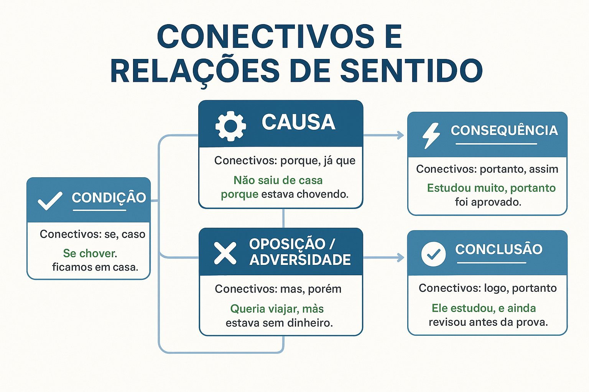

Conectivos e Relações de Sentido: como usar para organizar ideias e construir textos coerentes
O que são os conectivos?
Os conectivos são palavras ou expressões que estabelecem relações lógicas entre partes de um texto. Eles ajudam a criar clareza, fluidez e organização, permitindo que o leitor compreenda como uma ideia se relaciona com a outra.
Dominar os diferentes tipos de conectivos é essencial para produzir textos argumentativos, acadêmicos e redações do ENEM e vestibulares como o UEMA PAES com coesão, coerência e progressão temática.
Conectivos de causa
Indicam o motivo ou a razão de uma ação.
- porque, como, já que, visto que, uma vez que, pois (antes do verbo)
Exemplos:
- Não fui ao trabalho porque estava doente.
- Como estava chovendo, a aula foi cancelada.
Conectivos de consequência
Apresentam o resultado de uma ideia anterior.
- portanto, assim, logo, por isso, de modo que
Exemplos:
- Estudou bastante, por isso teve um ótimo desempenho.
- O trânsito estava intenso, de modo que chegamos atrasados.
Conectivos de oposição
Estabelecem contraste entre duas ideias.
- mas, porém, contudo, todavia, entretanto, no entanto
Conectivos de concessão
Expressam uma ideia contrária ao esperado.
- embora, ainda que, mesmo que, apesar de
Conectivos de condição
Indicam dependência entre ações.
- se, caso, desde que, a menos que, contanto que
Conectivos de comparação
Estabelecem relação de semelhança ou diferença.
- como, assim como, mais... que, menos... que, tal qual
Conectivos de finalidade
Indicam objetivo ou intenção.
- para, a fim de, para que, com o propósito de
Conectivos de explicação
Introduzem justificativa ou esclarecimento.
- porque, pois (após o verbo), que, já que
Conectivos de conclusão
Encerram ideias ou apresentam síntese.
- portanto, assim, logo, por fim, enfim
Tabela de conectivos mais usados em textos formais
| Relação | Conectivos |
|---|---|
| Causa | porque, como, visto que |
| Consequência | portanto, assim, de modo que |
| Adição | além disso, também, não só... mas também |
| Oposição | porém, contudo, no entanto |
| Concessão | embora, apesar de |
| Condição | se, caso, contanto que |
| Finalidade | para, a fim de |
| Conclusão | logo, portanto |
Quiz — Conectivos e Relações de Sentido
Questão 1 — Em qual frase o conectivo indica causa?
A) Estava cansado, portanto dormiu cedo.
B) Não viajou, porque precisava trabalhar.
C) Estava gripado, por isso ficou em casa.
Questão 2 — Em qual frase o conectivo expressa oposição?
A) Ele estudou muito, mas não passou.
B) Chegamos cedo, por isso descansamos.
C) Era tarde, portanto voltamos para casa.
Questão 3 — Qual frase apresenta conectivo de conclusão?
A) O preço aumentou, logo as vendas caíram.
B) Não saiu, embora estivesse calor.
C) Falaria com ele, caso chegasse cedo.
Questão 4 — Em qual alternativa há conectivo de finalidade?
A) Estudou bastante para melhorar sua nota.
B) Tentou sair, mas estava chovendo.
C) Ficou cansado, por isso descansou.
Questão 5 — Qual alternativa apresenta conectivo de concessão?
A) Chegou atrasado, porém participou da reunião.
B) Embora estivesse cansado, continuou trabalhando.
C) Era tarde, portanto fomos embora.
Explore Outros Conteúdos
Continue seus estudos acessando outras seções do site Mestre Kira: